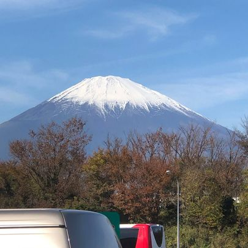
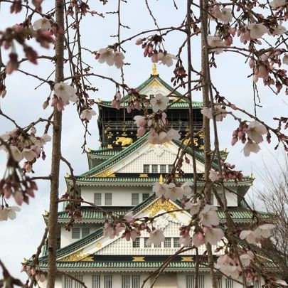
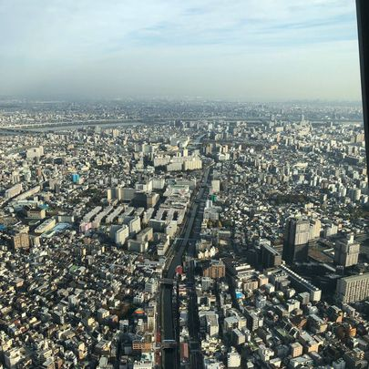
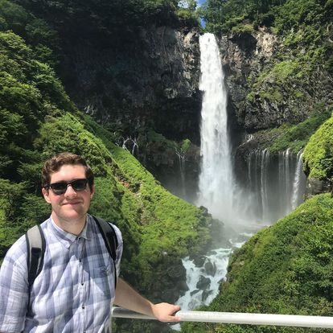

Here on this gallery page, enjoy a collection of photos from my time living in Japan between the summers of 2018 and 2020.
A side street in the Asakusa district of Tokyo

Mt. Fuji as seen from a rest-stop on the highway in Shizuoka PrefectureA couple of the thousands of Torii gates at Fushimi Inari in KyotoA view from the platform of Minami-Osawa station in Hachioji, near my apartment

Osaka Castle in spring with cherry blossoms in full bloomA park of sakura blossoms in full bloom near my bus stop in Hachioji

A bird's eye view from Tokyo Tower, the tallest structure in Japan, of the city's spread into the distance

Me in front of the Kegon waterfall in the mountain town of Nikko, north of Tokyo